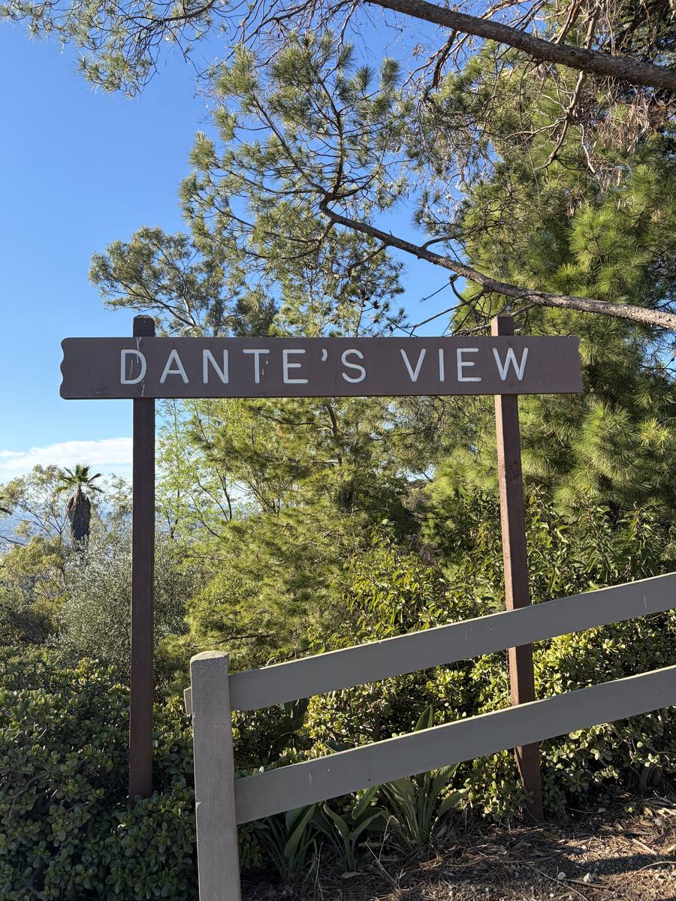
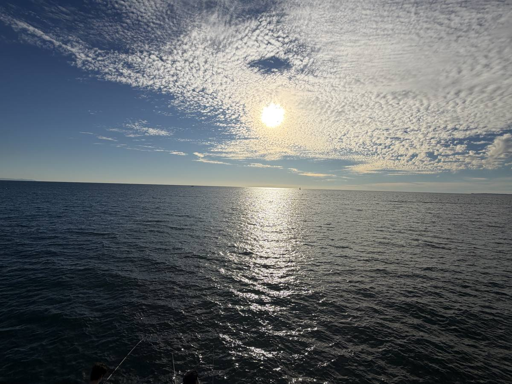
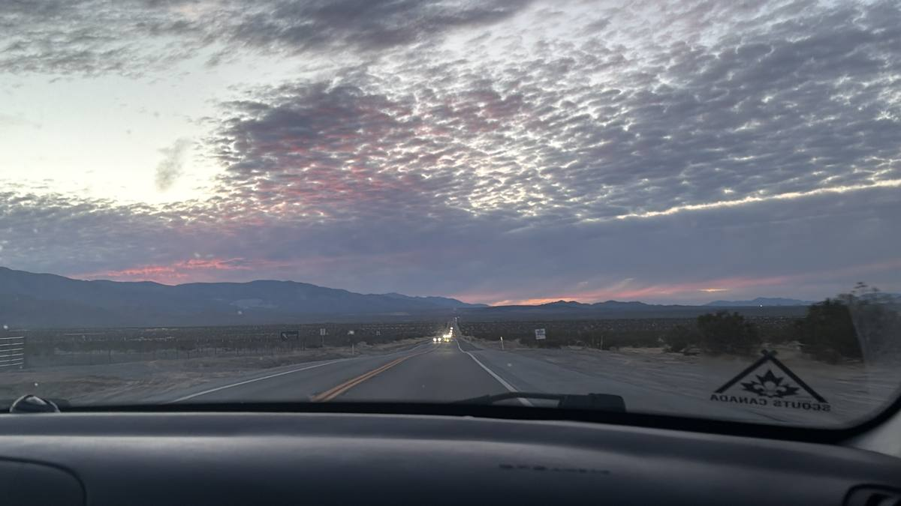

Los Angeles and Joshua Tree
November 21 – 23, 2026 · Los Angeles, desert camping
Draft. Placeholder story. Only dates and places from the passport and photos, no memories yet. Captions are rough descriptions of what is visible.
A weekend away. A sunrise hike in LA on November 21, the beach, a walk on Hollywood Boulevard, then camping and climbing in the desert on November 22.
Not a passport trip. Dates come from the photos (November 21–23, Pacific time). Locations are guessed from what is visible: Dante's View sign, Hollywood sign, Walk of Fame stars, desert with Joshua trees.







